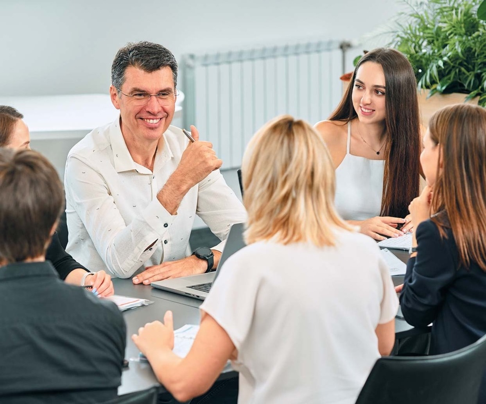
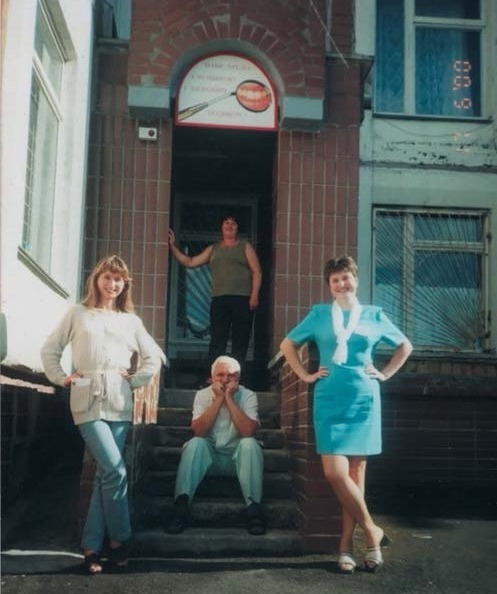
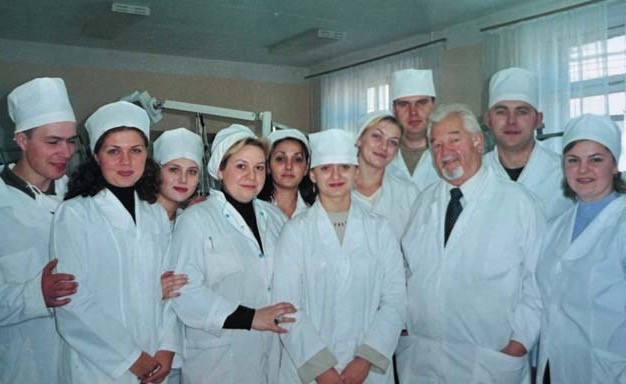
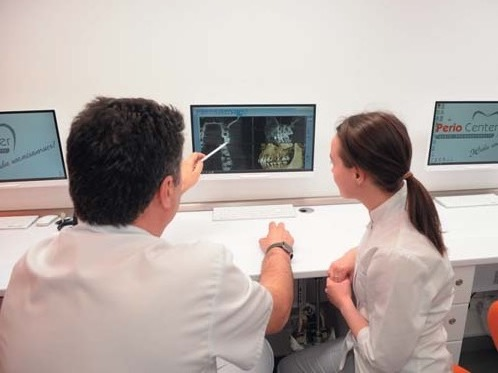
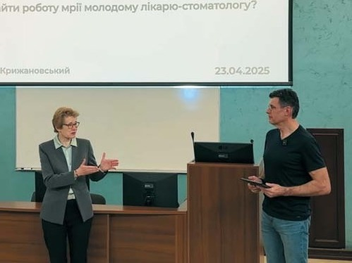
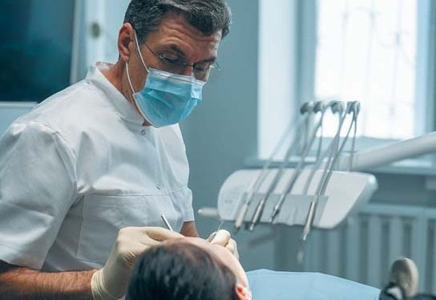

Вітальня · журнал «ДентАрт» 2025 №3
Вітальня — Віктор Крижановський: «Сьогодні я лікую пацієнтів руками лікарів, яким передаю свій досвід»
GREETINGS — VIKTOR KRYZHANOVSKYI: "TODAY I TREAT PATIENTS WITH THE HANDS OF DOCTORS TO WHOM I PASS MY EXPERIENCE"
Вітальня
Віктор Крижановський: «Сьогодні я лікую пацієнтів руками лікарів, яким передаю свій досвід»
У Вітальні «ДентАрту» на читачів чекає зустріч з Віктором Миколайовичем Крижановським, лікарем-стоматологом, ортопедом і хірургом, але найбільше відомим як періодонтолог – і в той же час успішним управлінцем стоматологічного бізнесу, який в останні роки працює CEO – генеральним директором групою компаній PERIO CENTER у Києві. Його внесок у розвиток української періодонтології неоціненний!

– Вікторе, вітаю! Бачу, Ви в офісі зараз, так?
– Ні, вже вдома, Сергію Володимировичу, це такий домашній кабінет. Але знаєте, для мене дім – це теж офіс, бо я постійно працюю.
– Отже, починаємо. Коли йдеться про Вітальню в журналі «ДентАрт», ми дивимося на нашу професію через шлях конкретного стоматолога, відомого стоматолога, такого, яким є і Ви, висококласний періодонтолог. Я спеціально вживаю цей міжнародний термін, а не радянський – пародонтолог. Моє перше запитання таке: що таке «СЕО»? Цю абревіатуру я вперше почув від Вас на означення Вашої посади минулого року і плутаюся до цього часу…
– Спочатку я хотів би трішки скоригувати Ваше запитання, бо якщо говорити про офіційну спеціалізацію, то я не був періодонтологом. Коли я працював лікарем-стоматологом, такої спеціалізації у нас в Україні ще не було. Я працював спочатку загальним лікарем-стоматологом, потім ортопедом, потім у мене була спеціалізація лікар-хірург-стоматолог. Далі – головний лікар, наразі – медичний директор – ось ці спеціалізації. Спеціалізація пародонтолога, або періодонтолога, у нас в Україні з'явилася, мабуть, років два тому, а я вже не працюю лікарем-стоматологом більш ніж три роки. Від 40 до 50 років я поєднував лікарську практику і організаційні справи, тобто працював і лікарем-стоматологом, і головним лікарем, а після 50 веду винятково управлінську організаційну діяльність. Сьогодні я управлінець медичного бізнесу. Як писав я у своєму резюме, сьогодні я лікую пацієнтів руками лікарів, яким передавав і передаю свій досвід, які працюють в Україні і за її межами. І від того отримую найвище задоволення!
Абревіатура CEO, про яку Ви питаєте, англійською Chief Executive Officer, українською означає генеральний директор, тобто директор, у якого є ще директори. У компанії PERIO CENTER у моїй команді п'ять директорів: адміністративний директор, директор виробництва, директор освітнього центру, директор з маркетингу і фінансовий директор. Тобто це така управлінська команда групою компаній PERIO CENTER, в яку входять стоматологічні клініки, де надаються медичні послуги, є партнерські проєкти і є освітній центр, де ми і готуємо своїх працівників, які потім працюють у нас, і навчаємо працівників іззовні, тобто спеціалістів, які звертаються до нас за навчанням.

Батько зміг зацікавити мене стоматологією
– Цікаво, як Ви стали стоматологом взагалі?
– Ну, це, напевно, було визначено долею, бо мій батько Микола Болеславович Крижановський – лікар-стоматолог, він пропрацював понад 30 років стоматологом і вийшов на пенсію безпосередньо із стоматологічного кабінету. Коли я у 1993 році звільнився з лав Збройних Сил України, він розказав мені про таку спеціалізацію, як зубний технік. І я вступив у коледж, закінчив його з червоним дипломом і працював зубним техніком. Працював успішно, але якось мені батько каже: «Вітю, ну невже тобі подобається, щоб отак-от тобою хтось командував? (Тобто лікар). Невже ти не хочеш стати лікарем-стоматологом?». Я спочатку не хотів, бо мені досить комфортно було працювати зубним техніком, мені це подобалося… Але все ж у 1997 році вступив до медичного університету імені Богомольця. Протягом усіх років навчання працював зубним техніком і самостійно сплачував за своє навчання.
Досвід зубного техніка мені дуже допомагав під час навчання в університеті. Коли вивчали ортопедичну стоматологію, мені було досить легко, я все дуже добре розумів. В ортопедії у мене взагалі ніколи не було жодних проблем, що й дозволило потім стати лікарем-ортопедом і виконувати досить складні роботи. Це мені подобалося дуже!
– Отже, це у вас традиція, тобто батько продиктував Вам Вашу професію…
– Ну, напевно, не так продиктував, як зміг зацікавити стоматологією. Коли я ще був школярем, тоді було дуже модно вступати у профтехучилища і вчитися на токаря чи слюсаря. Я теж думав, що стану токарем або слюсарем, бо там і форму давали. Така була романтика радянська. Але батько зміг мене все ж таки якимось чином заманити спочатку в медицину, а потім і в стоматологію. Завдяки йому я став класним лікарем-стоматологом. Він був моїм першим наставником у професії. Потім у мене були ще наставники, але він був першим. І завдяки йому у мене був дуже легкий старт, дуже легкий…
Завжди прагну з усім розібратися і довести до логічного кінця
– Я зрозумів, що це не Ваша офіційна спеціалізація – пародонтологія, тому що її не було тоді. Але як Ви зосередилися саме на пародонтології? Тому що я Вас знаю не як лікаря-ортопеда чи зубного техніка, а саме як пародонтолога, говорячи міжнародною мовою, періодонтолога.
– Це цікава і для мене історія, бо коли я ще був зубним техніком, мені було дуже складно працювати з тими дуже довгими зубами. Я не розумів, питав батька, що це таке, чому зуби такі довгі… Він казав, що це таке захворювання. І було дуже складно працювати на цих зубах, якісь конструкції виробляти дуже складно, і знімні, й незнімні. Таким було перше знайомство з парондонтитом. Потім, коли я почав працювати вже як лікар, то побачив, що ця хвороба може призвести до втрати всіх зубів, і це жахливо! Ця хвороба потребує серйозного лікування. На той момент ми не розуміли, як працювати – робили якісь ванночки, примочки, уколи… Тобто все, що радила радянська школа, робили, але воно не приводило до якихось гарних результатів.
Потім я став працювати як лікар-хірург і побачив, до яких наслідків призводить ця хвороба: як з'являються кишені, як руйнується кістка… Тобто це захворювання я вже помацав руками і побачив, скільки ускладнень воно дає. І у мене виникло бажання розібратися з цією проблемою. На той час усі казали, що пародонтит – це невиліковна хвороба, але у мене така натура, напевно, що завжди прагну з усім розібратися і довести до логічного кінця. Це стало ніби викликом для мене, щоб я розібрався з цією хворобою. І потім було дуже багато навчань за кордоном, було дуже багато книжок. Я поставив собі за мету все ж таки добитися цього і розібратися. Проаналізувавши все, що знав про це захворювання, всі напрацювання, я почав усе засвоєне на курсах упроваджувати в загальній стоматології, де ми працювали. Я побачив, що маю дуже гарні результати. Мене це вразило, і виникла ідея зробити відділення при цій загальній стоматології, де б зосередилися на пародонтології. Бо я розумів, що з тим лікуванням, яке я надаю пацієнтам з пародонтитом у нашій клініці, буде корисно познайомитися і колегам, які так само стикаються з цією хворобою. І можна зробити так, щоб це відділення стало відділенням для реферативних пацієнтів.
На початку ми просто поряд із клінікою додали ще невеличке приміщення і поставили дві стоматологічні установки, і там працювали тільки пародонтологи. Назвали це PERIO CENTER, і кілька років працювали на цих двох установках. Через 4 роки взяли поруч ще приміщення і додали ще одну стоматологічну установку і учбовий клас, так з'явився освітній центр PerioCenter.Education… Ось таким чином і була реалізована ідея.

Причина періодонтиту – у загальному стані організму
– Тепер таке запитання. Я чув, як лектор-періодонтолог виступає і каже, що 80 відсотків втрати зубів – це від періодонтиту. А я тоді кинув репліку: «Ура, тепер карієс не є причиною видалення зубів!..». Інша крайність – імплантологи кажуть пацієнтові (я знаю це, бо консультував таких направлених пацієнтів): ну що, все одно зуби випадуть, давайте ми всі зуби видалимо, поставимо вісім імплантатів на верхній щелепі, десять на нижній, і буде щастя… Чи буде щастя?
– Не буде. Щастя не буде, бо це не вирішення проблеми, це інші проблеми – і щодо стану ротової порожнини, і щодо задоволеності пацієнта, і щодо вартості лікування. Видаляти зуби, бо вони однак випадуть, – це найгірший варіант! Адже краще, ніж природний зуб, нічого немає. Все інше – протези. Ніколи протез пальця не замінить сповна палець. Протез ноги не замінить ногу на всі сто відсотків. Так, протез покращить життя людини, але щоб замінити на сто відсотків – ніколи! Тому ми маємо міняти свої органи на штучні лише в крайньому випадку. Так само і з зубами. Якщо зуб уже не може виконувати свою функцію, якщо він підлягає видаленню за медичними показаннями, тоді маємо замінити його на штучний зуб…
– Я пригадую свою початкову стоматологію. У 1985 році в радянських вузах відкрили курси профілактики стоматологічних захворювань. І тоді мені дуже припав до душі індекс CPITN, тому що в тлумаченні цього індексу йдеться, що тільки ті люди, у яких є хоча б один секстант із пародонтальною кишенею 6 міліметрів і більше, підлягають пародонтальному лікуванню. А решті потрібна професійна гігієна і навчання індивідуальній гігієні зубів. Моє запитання: чи не дешевше й простіше навчити ефективно чистити зуби, і тоді періодонтологи залишаться без роботи?
– Індекс CPITN лежить в основі інших індексів, які сьогодні широко застосовуються, таких як PSR та інші. Можу підтвердити, що на сьогодні PSR – це найкращий скринінг-тест для того, щоб відокремити людей, які мають періопроблеми, від тих, які їх не мають. Чому це дуже важливо? Тому що пацієнти, які мають хвороби тканин пародонта, потребують окремого лікування, яке відрізняється від лікування тих людей, які не мають такого захворювання. І якщо лікар із самого початку це врахує, буде набагато легше досягти успіху.
Тепер щодо профілактики. Що сьогодні ми знаємо про пародонтит? Я стверджую, що це не стоматологічне захворювання в чистому вигляді, це загальне захворювання. Адже немає специфічного мікроорганізму, який би викликав його. Не знаю, як до цього поставляться читачі журналу, наша професійна аудиторія, проте я вважаю, що це загальне захворювання, бо якщо немає специфічного мікроорганізму, а є звичайна флора, то, напевно, тут існують проблеми із загальним станом організму. Тобто через якісь причини організм дає добро на те, щоб це захворювання розвивалося. Можемо провести аналогію з онкологічними хворобами: онкоклітини у нас з'являються постійно, але в однієї людини вони ліквідовуються імунною системою, тобто немає росту пухлини, а в іншої це захворювання розвивається.
І з періодонтитом так само. Мікроорганізми – не причина. Причина в загальному стані організму, в тому, як він реагує – чи дає можливість розвиватися цьому захворюванню, чи не дає.
– Тоді виходить, що коли у людини гарний імунітет, то навіщо їй чистити зуби? Періодонтиту не буде…
– Не буде. І ми знаємо це. Ви як лікар теж це спостерігали. І я це бачив не раз: у одного пацієнта чисті зуби – і є періодонтит, а в іншого каменями все обкладено, а періодонтиту немає…
Чому це загальне захворювання? Тому що наслідки періодонтиту позначаються на всіх органах і системах організму людини. Мікроорганізми, токсини, медіатори запалення містяться в ротовій порожнині, і якщо це захворювання 3-го або 4-го ступеня, то пораховано, що його площа – як долоня людини! І як лікарі, ми можемо уявити, що діється, якщо така площа гниє в ротовій порожнині і це все всмоктується в кров і йде поза печінкою, відразу потрапляє в мале коло кровообігу і розповсюджується по всьому організму. Ось причина такого токсичного впливу і на ендотелій судин, і на очі, на органи по всьому тілу. Тому наслідки цього захворювання дуже згубні для організму.
І що ми спостерігаємо у наших пацієнтів? Коли вони проходять лікування, то відразу відчувають полегшення загального стану, тому що знімається оце навантаження.

Руки моїх двадцяти лікарів – це ніби продовження моїх рук…
– Улітку цього року на Вступній Церемонії Вас, визнавши заслуги перед професією і суспільством, прийняли до Міжнародної колегії стоматологів (ICD), професійної організації із 105-річною історією… Яке Ваше враження від церемонії і спілкування в колі таких же визнаних стоматологів з усієї Європи?
– Передусім я хотів би подякувати Вам, Сергію Володимировичу, за те, що запросили мене в члени Міжнародної колегії стоматологів, мені дуже приємно, що мій внесок у розвиток стоматології цінують. Враження від церемонії були дуже приємні, дуже теплі. Коли потрапляєш до такої спільноти, то відчуваєш, що кожна людина тут – особистість, яка зробила значний внесок у розвиток стоматології у своїй країні і світі. Там немає однакових людей, вони креативні, невтомні, кожен прагне зробити більше для здоров'я нації, для своєї держави і людства, для пацієнтів і колег – і мене це дуже надихає!
Сімейний бізнес розросся до групи компаній
– У стоматології поширена форма сімейного бізнесу. А хто з Вашої родини працює поряд з Вами у Вашому періодонтальному бізнесі?
– Шлях нашої компанії розпочався 25 років тому із сімейного приватного кабінету, де мій батько працював лікарем-стоматологом, дружина Олексія Ольга, моя дружина Оксана і моя сестра Ольга працювали асистентками і адміністраторками, мама Олена – директором. Ми з братом Олексієм працювали зубними техніками. Тоді я, мій брат Олексій і наша сестра Оля навчалися в медичному університеті...
Ось така у нас була в 1999 році родинна стоматологія. Потім ми почали приймати на роботу інших людей, і сьогодні в компанії з родичів працюють моя сестра Ольга, її чоловік Євген, моя дружина Оксана, рідна сестра мами Віра. Решта із 80 співробітників – наймані працівники. Проте є дуже цікава річ: за ці чверть століття нашої роботи на ринку стоматології з нами працюють багато працівників понад 10, 15 і навіть 20 років. Є співробітники, які виросли в компанії до рівня директорів і керівників – Олена, Христина, Ірина, Віра, Людмила в компанії понад 20 років. Для мене це означає, що ми все робимо правильно!
Моя дружина Оксана нині – директорка компанії PERIO CENTER. Мої плани – полишити посаду гендиректора компанії, і щоб Оксана посіла цей пост. Ми над цим працюємо, у нас прописано, як ми маємо це зробити, щоб я міг іти далі, займатися ще серйознішим проєктом, який буде охоплювати вже всі напрямки стоматології.
Нашій доньці Дар'ї буде невдовзі 20 років, вона з 14 років уже допомагала нам у клініці, була помічницею асистента. З 1 вересня вона на третьому курсі стоматологічного факультету Київського медичного університету (ПВНЗ). Цього літа донька пройшла навчання як зубний гігієніст у нашому освітньому центрі PerioCenter.Education і вже приймала своїх друзів, а ось ученик прийняла бабусю Олену, мою маму. І тут у нас усіх щастя – і в мами щастя, і в дідуся щастя, і у мене щастя! Донька-студентка вже працює зубним гігієністом!

Спорт і спілкування з колегами дарують позитивні емоції
– Вільний час Ви присвячуєте навчанню стоматологів, так Ви написали у згоді номінуватися на членство в Міжнародній колегії стоматологів… А поза межами стоматології є ще якісь заняття? Чим Ви стрес знімаєте?
– Я не стресую, це по-перше. А по-друге, я дуже люблю фізичні активності. Років у 40 почав їздити на велосипеді, потім додав біг, а сьогодні ще й плавання. Виходить справжній тріатлон. Я не можу назвати це спортом, бо це не професійні заняття, але це фізичні активності, які допомагають і фізичному, і духовному здоров'ю.
Раз на місяць у нас відбувається навчання нашої команди, і це так само для мене хобі, бо я дуже люблю спілкуватися з лікарями, з радістю передаю колегам свій клінічний досвід, своє клінічне бачення. Це теж задоволення – тобто і спорт, і спілкування з колегами дарують позитивні емоції…
– Айронмен?
– Айронмен – є ще й така мрія у житті, і я сподіваюся, що дійду до неї. Сьогодні це ще ніби за межами моїх можливостей, проте я рухаюся у цьому напрямку.
Розвитку в усьому…
– І традиційне побажання читачам журналу ДентАрт…
– Побажаю, колеги, розвитку! Розвитку в усьому – у професії, у власному житті, розвитку в духовному сенсі. Бо все, що не розвивається, зупиняється і відразу деградує. Ми з вами робимо велику справу – допомагаємо людям, лікуємо їх, позбавляємо від хвороб і робимо їхнє життя кращим. Тож тримаймося разом, підтримуймо одне одного і рухаймося вперед!
– Дякую за цікаву розмову! Зичу здійснення всіх Ваших ідей!
– Навзаєм!
Розмовляв Сергій Радлінський
